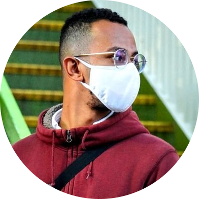

|  |
Amged Elsheikh Abdelgadir Ali2nd year Master's Degree student Tohoku University
|
| 10/2012~11/2017 | Bachelor of Science, University of Khartoum Faculty of Engineering Mecahnical Engineering Department, Khartoum, Sudan |
| 12/2017~12/2018 | Assistant Tutor at University of Khartoum in order to complete th National service, Khartoum, Sudan |
| 01/2019~08/2019 | Engineering Trainee Business Development Engineering Trainee Business Development at OLGA Engineering Industries, Khartoum, Sudan |
| 10/2019~09/2020 | Under Graduate Research Student at Tohoku University Department of Mechanical and Aerospace Engineering, Miyagi, Japan |
| 10/2020~09/2022 | Master's degree student at Tohoku University, Graduate School of Engineering, Department of Robotics, Neuro-Robotics lab (Hayashibe-Owaki lab) |